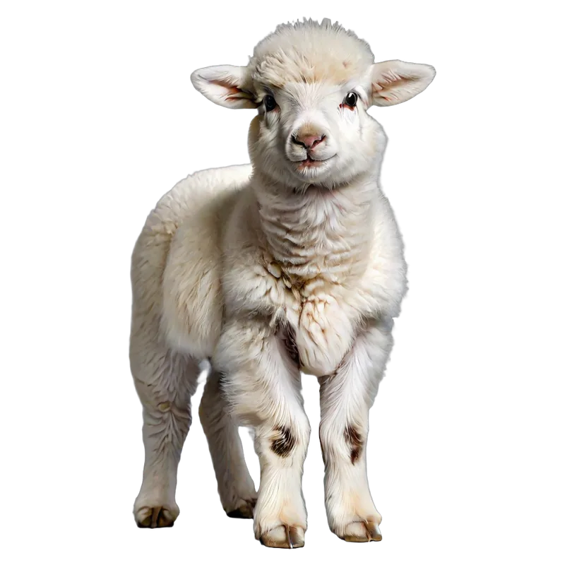
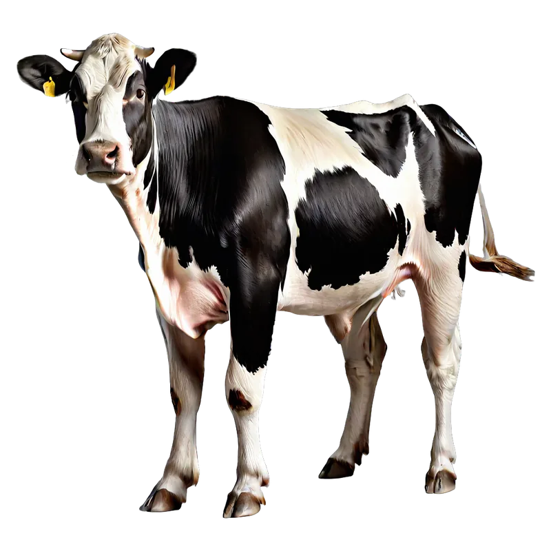
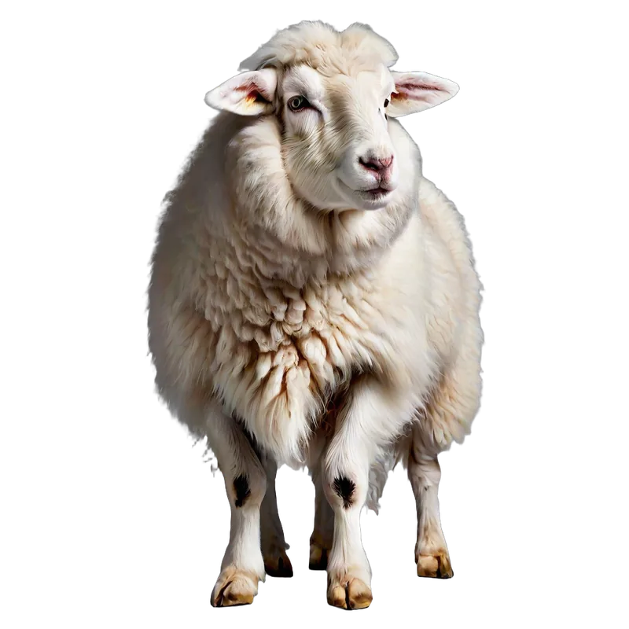
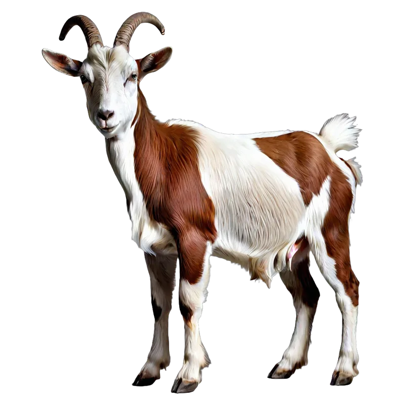
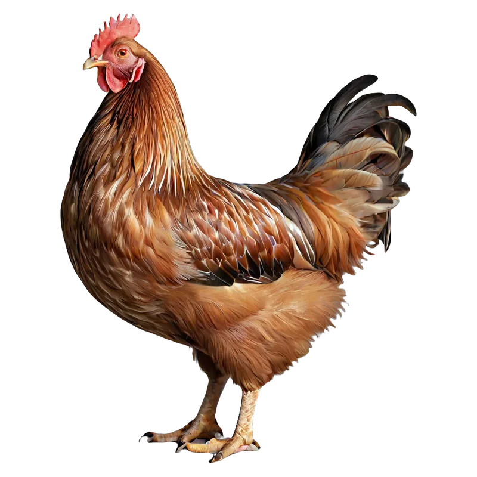
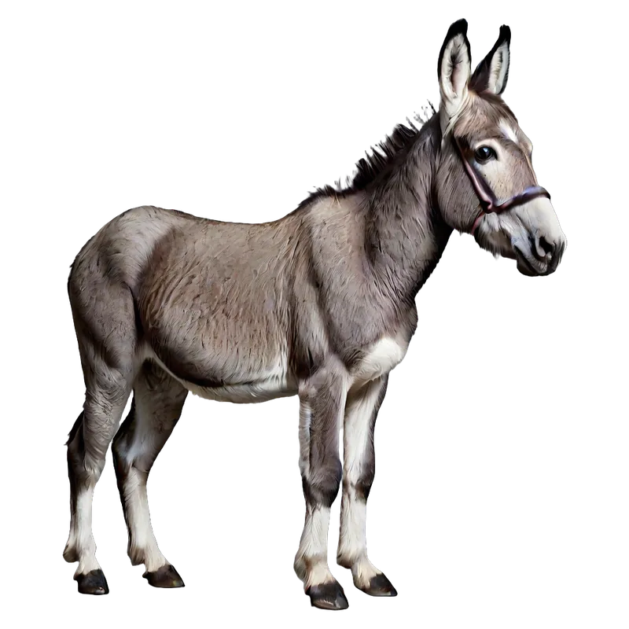
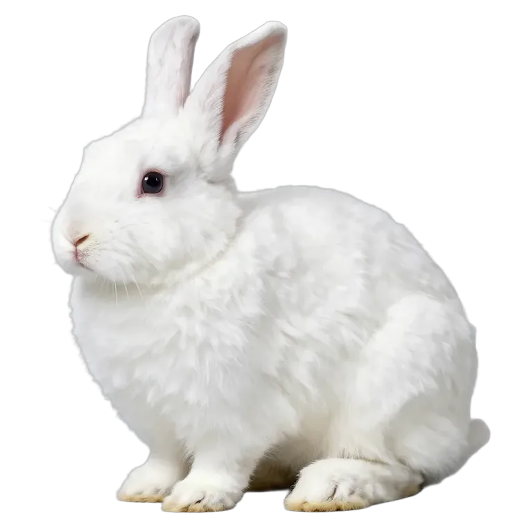
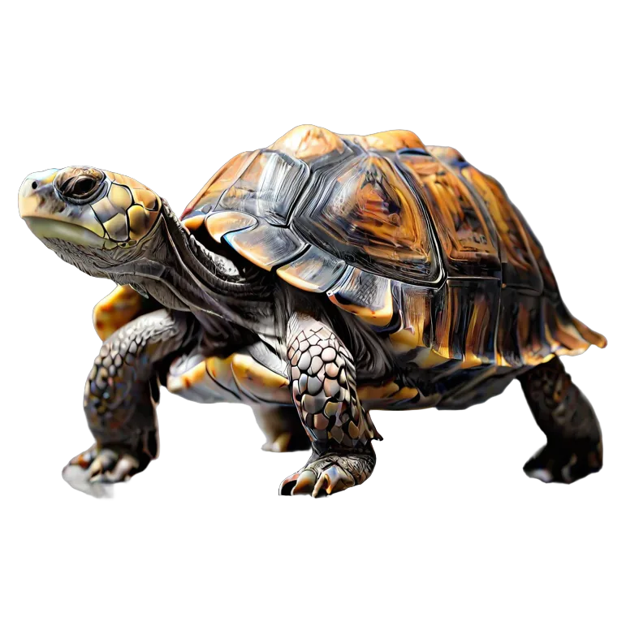

بَقَرَة
كِتَابِي الْأَوَّل
حَيَوَانَاتُ الْمَزْرَعَةِ
وَالْحَيَوَانَاتُ الْأَلِيفَة
وَالْحَيَوَانَاتُ الْأَلِيفَة

صِغَارُ الضَّاد
06-farm-and-pets · page 1 · front cover
بَقَرَة

06-farm-and-pets · page 2 · item 01
خَرُوف

06-farm-and-pets · page 3 · item 02
مَاعِز

06-farm-and-pets · page 4 · item 03
دَجَاجَة

06-farm-and-pets · page 5 · item 04
حِصَان

06-farm-and-pets · page 6 · item 05
جَمَل

06-farm-and-pets · page 7 · item 06
حِمَار

06-farm-and-pets · page 8 · item 07
قِطَّة

06-farm-and-pets · page 9 · item 08
أَرْنَب

06-farm-and-pets · page 10 · item 09
سُلَحْفَاة

06-farm-and-pets · page 11 · item 10
أَيْنَ الْبَقَرَةُ؟
06-farm-and-pets · page 12 · question 1
أَيْنَ الْحِصَانُ؟
06-farm-and-pets · page 13 · question 2
أَيْنَ الْقِطَّةُ؟
06-farm-and-pets · page 14 · question 3
كُلُّهَا مَعًا!
خَرُوف
مَاعِز
دَجَاجَة
حِمَار
أَرْنَب
سُلَحْفَاة
06-farm-and-pets · page 15 · all together
صِغَارُ الضَّاد
يتعرّف طفلك على حيوانات المزرعة والحيوانات الأليفة بصور حقيقية واضحة.
من عمر سنة إلى ٣ سنوات
ISBN / BARCODEprinter places it here
06-farm-and-pets · page 16 · back cover